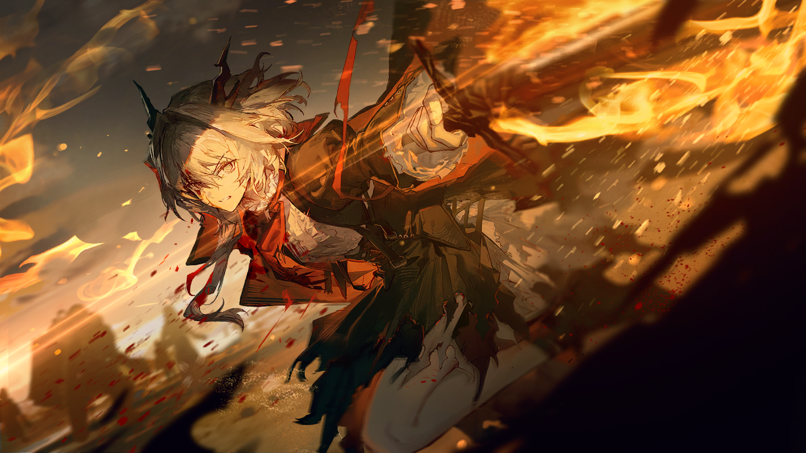

拉夫连
汇报情况，中尉。

第五集团军军官
我们的第一轮冲锋成功击溃了敌方的先头部队，让敌军损失惨重。
第五集团军军官
但是敌方主力军迅速后撤，依仗高地重新搭建了防线。强攻的话可能有风险。
拉夫连
嗯……叶甫根尼也不完全算是绣花枕头。
拉夫连
不过听上去离彻底撕开他们的防线只差一口气了。
塔露拉
我们的攻势为什么停下了。

拉夫连
你为什么——难道整合运动那边已经搞定了？
拉夫连
我还是太低估你了吗……
塔露拉
你低估的不是我，是我们。
塔露拉
你见到过整合运动是如何对抗敌人的，而比扎莫列斯城下还艰苦的战斗，整合运动也不是没有经历过。
塔露拉
更别忘了，拉夫连。
塔露拉
他们也是乌萨斯人。

拉夫连
*赞许的乌萨斯粗口*。
塔露拉
你们刚刚说，你们需要一个对敌军防线的突破口。
拉夫连
我可不是这样说的。
塔露拉
但是听上去就是这个意思。

拉夫连
你不该再冒险了，德拉克。
拉夫连
我听说过度施术刚刚夺去了你的一条手臂。要是你死在这里，想必你口中强大的朋友们也饶不了我。
塔露拉
如果你的意思，是让我和整合运动把功劳都留给你们，我劝你趁早灭了这个念头。
塔露拉
想彻底击溃眼前的敌人，你最好和我一样毫无保留。
拉夫连
……你懂得如何激励一个军人，塔露拉。
塔露拉
你是一个战士，拉夫连。
塔露拉
到了得胜之时，我们会再次相见。
第五集团军军官
她想要……直接进入第四集团军的腹地？简直疯了，后方还有高速战舰坐镇！
拉夫连
立刻通知舰队，展开全部舰炮，牵制住叶甫根尼的军舰。
拉夫连
步兵也都跟上，别让我们的感染者战友看了笑话！
他话音刚落，就瞪大了双眼。
从军数十年，也未见过如此胡来的人——那位德拉克，直勾勾地冲向了集团军的军阵里。
一辆战车的主炮在她头顶上方炸响，她迎面注视着，丝毫没有避让的举动。
战车几近碾过她的头顶，却猛然被熔断了履带与轮轴，庞大的车体向侧面栽倒，第二、三辆迎头撞上，翻滚着砸进雪地。
钢铁挤压着钢铁，发出刺耳的悲鸣，断断续续的通讯器声音漏了出来。

第四集团军军官
让，让后车从侧翼包围，不要直接冲锋，再联络……炮兵——

塔露拉
……还想反抗吗？

塔露拉
试试看啊。

利落的斩击过后，留给通讯器那头的，只剩下一声尖叫。
她没有停下，深吸了一口气，纵身跃向前去。雪花尚未落到肩头，便在半空中化作了白雾。
孤单的德拉克，在爆炸的间隙中穿行，她很少躲闪，爆炸的火光萦绕在她周围，仿佛是为她织就的披风。
刚踏过一个盾卫的尸首，下一瞬剑锋便抹开一名精锐先锋的喉咙。
另一边的弩手还未瞄准，腕部已经烧了起来，惨叫着丢掉了武器。
从后方包抄来的数辆战车也未能逃离她的注意，战车的弹药库被诡异地点燃，在接连的殉爆后纷纷化为在空中飞舞的碎片。
碎屑、灰尘、焦炭，犹如一场阴云之下久违的大雨，扬起的烟尘与灰烬依次淹没阵地。
这一切最终都在一阵滔天的火光过后，陷入漫长的寂静。
第五集团军军官
她、她——
拉夫连
……看好了，小子。
拉夫连
听说这就是当年在切尔诺伯格，让帝国上下都睡不着觉的人。
于是，战场笼罩在了盛大的火光之下，在看见她的身影的那一刻，乌萨斯的军人们选择了退却。
他们看见了——
有一个人，正在从灰烬中走来。
她走过的路，还燃着火。
白天的战斗刚刚结束，晚餐的篝火已经烧了许久。
斯韦特兰纳坐在中军营帐里，地图铺满整张行军桌，没有去庆功，也没有叫人陪同。
她只是看着那张图。
圣骏堡的城防分布、第二集团军所剩的阵地，以及她标出的、属于整合运动的“区域”。

第一集团军卫兵
元帅，参谋长莫尔恰诺夫中将到了。

斯韦特兰纳
让他进来。

第一集团军参谋长
元帅。
斯韦特兰纳
跟着整合运动的中央集团军，他们的名册核实完了吗？
第一集团军参谋长
名册已经核实完毕。第七旅第一团、第十一旅第三团，连同炮兵第三营都在。
第一集团军参谋长
照元帅吩咐，已向他们援助了足量的武器和弹药。
斯韦特兰纳
嗯。
第一集团军参谋长
另外，维特阁下十分钟前又发了电报，询问是否按原有的计划推进。
第一集团军参谋长
他非常关心什么时候可以进城，以及更换旗帜后，曾经的官员——
斯韦特兰纳没有抬头，笔尖在地图上轻轻停了一下。
斯韦特兰纳
转告他，计划和旗帜的事都不用担心。他只需要坐在他的椅子上，等候我的消息。
斯韦特兰纳
不出意外的话，明天太阳升起前，我们就能拿下城墙。
第一集团军参谋长
明白。
第一集团军参谋长
那么，等到入城的时候……整合运动那边的部署，是否有什么指示或建议——

斯韦特兰纳
……你知道，整合运动中那位总是沉默的领袖吗？她的名字是叫米拉娜？
第一集团军参谋长
在行军营地见过一面，但并未与她交流。
斯韦特兰纳
真是有趣，我实在无法想象，远北的矿场，竟然能培养出这样一位出色的……政治家。
斯韦特兰纳
她将会第一个走进那座城，这是她应得的。
斯韦特兰纳
但是圣骏堡的人民会怎样看待这样一位“感染者英雄”，我们就要拭目以待了。
第一集团军参谋长
至于那位感染者名义上的领袖，塔露拉——
斯韦特兰纳
属于乌萨斯的德拉克……整合运动的军事主帅，她需要做得更多。
斯韦特兰纳
她最好留在城外处理干净第四集团军。包括降军的清点、残军的撤退封锁——每一件事都要紧，每一件事都配得上她的身份。
斯韦特兰纳
……她是个老道的战士，这些甚至不需要我们去提醒。
帐外的声音
元帅，第二集团军的卡特列夫上校来了，他想与您谈谈。
斯韦特兰纳
他们也该来了……让他进来吧。
使者走进来的时候靴底还带着路上的泥，他单膝跪地，双手呈上一封压着封漆的战报。

第二集团军使者
尊敬的元帅。我们司令已经同意了您的提案——自明日起，第二集团军全军北撤，离开圣骏堡。
第二集团军使者
司令说，乌萨斯人的血，不该再流在乌萨斯人自己的城墙下了。
第二集团军使者
另外，司令也期待您履行自己的承诺。
斯韦特兰纳接过战报，缓缓扫视了一遍，重新折好。
她的表情没有变化——或者说，变化太细微，细微到像一潭水面上一秒就消散的波纹。
斯韦特兰纳
收到了。替我向司令致意，一路辛苦。
第一集团军参谋长
……果不其然。
第一集团军参谋长
第二集团军从来都是反复之人，他们不可能真正看得上那些戍守远北的泥腿子。
斯韦特兰纳
也许……
桌上的那张城防图上，蓝色虚框标着米拉娜和九将要踏入的路线，红线在城外绕了一圈，那是留给塔露拉的位置。
斯韦特兰纳
去吧，莫尔恰诺夫，通知整合运动，告诉他们计划进行得非常顺利。
参谋长鞠了一躬……营帐里又只剩下了一个人。
她闭上眼睛，倚靠着座位。
灯火摇了一下，人的影子也跟着晃了起来，一直延伸到地图边缘，盖住了帝国荣耀的城门。

瓦莲汀
这应该不是我们第一次见面。坐吧，孩子。

阿洛伊泽
不，这的确是我们第一次见面。您几乎从不参加戈尔奇科夫公爵府的宴会，此前，我都没有荣幸能与您私下交谈。

瓦莲汀
这可实在是遗憾……
瓦莲汀
不，没关系，我们可以期待今后仍然有机会。
瓦莲汀
现在可以告诉我，你今天冒着生命危险来到这里的目的吗？

阿洛伊泽
您知道的，就在此时此刻，我们的陛下正率领军队与二、四叛军展开决战。我们有希望获得胜利。
阿洛伊泽
作为首都卫戍军团的总指挥，您现在只有一件该做的事。

阿洛伊泽
打开城门，让乌萨斯真正的皇帝回到圣骏堡，把那些暴戾的叛臣驱逐出去——
瓦莲汀
阿洛达……我亲爱的后辈。
瓦莲汀
在你看来，我一定是可以被随意说服的反复小人了。

阿洛伊泽
不，不是这样的！

阿洛伊泽
我相信，当初女大公要求入城的时候，您一定有不得已的苦衷。您做了错误的选择，但最终的结果，却并不只由您一人造成。

阿洛伊泽
因为……显然我和同僚们也没能守住皇宫的最后一道防线。

瓦莲汀
……
阿洛伊泽
所以现在正是我们挽回错误的最好时机。
阿洛伊泽
沃尔金娜公爵——不，沃尔金娜上将，我请求您——

传令兵
总指挥阁下，指挥部接到消息，东入口正在持续遭受炮火攻击！请指示！
瓦莲汀
哪支集团军？
传令兵
不——不是集团军！他们自称整合运动！
瓦莲汀
……
阿洛伊泽
——！
阿洛伊泽
陛下呢？既然整合运动都已经突破第四集团军的防线过来叫门了，第一集团军难道动作还不如他们迅速吗？
传令兵
我不知道，但那些人，他们的确让陛下在通讯里说了几句话。可副指挥说，我们不能确定那就是陛下本人——

瓦莲汀
传令下去——

阿洛伊泽
公爵阁下！
瓦莲汀
让东侧驻军不要抵抗。
瓦莲汀
如果他们能打进来，那就让他们来。

塔拉斯
米拉娜！第四集团军退兵了！塔露拉他们成功了！

塔拉斯
你看到了吗！城墙上的守军也撤防了！
塔拉斯
他们害怕了！我们胜利了！

米拉娜
是真的……
米拉娜
我就知道，塔露拉，一定会成功的。
九
米拉娜，我们的侦察兵注意到，就在刚刚，第二集团军已经有了撤退的迹象。
九
他们的主力部队完全没有遭受重大损失，在这种情况下撤兵恐怕别有原因。

米拉娜
看来对于那位元帅来说，还有在战场之外达成目的的手段。
米拉娜
九，我需要你立刻整顿部队，准备带着费奥多尔抢先进入圣骏堡。
米拉娜
我会带队先进城，罗德岛说过，城内仍有许多坚持抵抗的工人，我们需要尽快去收拢统合他们的力量。
米拉娜
你在进城之后，要立刻寻找一处隐秘的地方躲藏起来，在我们彻底占领街道和工厂之前不可以露面。
米拉娜
……如果发生了什么意外，也需要你立刻带着费奥多尔逃出来，和我们城外的战友会合。
九
我们不和塔露拉一起进城吗？

米拉娜
……
米拉娜
对，我们必须抢先进城，现在的补给完全依赖斯韦特兰纳提供，越早占据工厂和仓库对我们越有利。
米拉娜
如果城内的资源也被她抢先一步掌握，即使我们握着费奥多尔也会非常被动。
米拉娜
而且第四集团军只是暂时退败，还没有完全被击溃。塔露拉必须在城外战场坐镇。
米拉娜
保护费奥多尔的任务，只能由你的部队和中央集团军负责。
九
……明白。
九
那你呢？圣骏堡城中可能还有一些抵抗的城防军，需不需要我分出一些人手保护你？
米拉娜
不用了，我这里的队伍足够。如果要说还有什么需要你帮忙的话……
米拉娜
希望你能帮忙联络那位很擅长秘密行动的柳德米拉，请她在城内尽可能散布消息。我们要告诉所有人……

米拉娜
“伊凡·图林”，即将返回圣骏堡。
阿洛伊泽
我以为您……
瓦莲汀
你以为我会“誓死捍卫圣骏堡”，或者说，坚决押注在看上去赢面更大的那一方。
瓦莲汀
恐怕你们这些近卫军的年轻人在皇宫前抵抗我的人时，心里也是这么想的吧。

阿洛伊泽
……那是一场不该发生的悲剧。
瓦莲汀
你不可能对我没有恨，我知道。但我也是最近才明白一个道理。
瓦莲汀
上位者无论出于何种理由替下位者做出的决定，在许多时候，只是一种自我满足的傲慢。
瓦莲汀
因为我们在一开始就没有把那些被决定的人，当作与我们相同的、活生生的人。
瓦莲汀
上一次，我也以为自己是在保护圣骏堡，保护那些手无寸铁的民众，保护更多人。所以，我选择为女大公和她的叛军，打开城门。
瓦莲汀
可那是一次错误的判断，你也看见了，如今城中，是怎样一副光景。

阿洛伊泽
所以，刚才您依然是顺势而为。
瓦莲汀
你认为，在这场风波落定后，无论谁是最终的胜利者，他会允许我在圣骏堡活下去吗？
瓦莲汀
我必须要为自己的错判付出代价，对我而言，还存在所谓的“站队”吗？
阿洛伊泽
……那您为何在特辖局清洗贵族的事上，如此沉默？
瓦莲汀
瓦西里的女儿……你果然还是查到了。
阿洛伊泽
我没有办法不在意。
阿洛伊泽
您一直在预设我不会想知道、我不该知道。恕我冒昧，可有时候您说话的方式，令我想起我的父亲。
瓦莲汀
……
阿洛伊泽
沃尔金娜公爵……我知道，您与我的父亲是故交。过往的经历，让你们走上了截然相反的路。
阿洛伊泽
父亲不惜任何手段也要保全他作为贵族拥有的一切，而您，对圣骏堡所谓的上流圈层已经失望透顶的您……
阿洛伊泽
我以为……您会选择扫清那些陈腐的障碍，做好将这个国家交给她未来的主人的准备。
阿洛伊泽
同样是……不惜手段。
女人叹了口气，旋即又摇了摇头。
她看清了年轻人的执拗。

瓦莲汀
好，我告诉你。
瓦莲汀
大叛乱结束后的第十年，圣骏堡就发生过一次和如今类似的情况。
阿洛伊泽
……什么？
瓦莲汀
利益重新分配，贵族地位洗牌。操弄这场牌局的，是在当时还没那么显赫的一群新贵族。
瓦莲汀
在帝国议会的默许之下，他们终于彻底瓜分完了于大叛乱中倒台的传统军事贵族那庞大的资产，得以一跃成为阶层中最声名显赫的存在。
瓦莲汀
在这些人当中最受关注的，当属你的父亲，瓦西里·戈尔奇科夫。
瓦莲汀
最初，他以新兴产业贵族的身份入赘勋贵之家戈尔奇科夫，却没有与曾经的友人划清界限，反而乐于与他们分享利益。
瓦莲汀
他以戈尔奇科夫的名义交了许多朋友，而那场庆祝胜利的宴会，自然也规模空前。
瓦莲汀
你找到的那些人……特罗扬、梅利尼科夫、科尔什诺夫——他们都在。当时甚至陛下都派了使者前来。

瓦莲汀
而他们都是那场宴会所庆祝的胜利者，也是我接下来要讲述的荒诞剧的参与者。
女人的声音
……孩子，你在这里做什么？
女人的声音
天气很冷。你穿这么少等在这里，会着凉的。
女孩的声音
我要找戈尔奇科夫公爵。我要等他出来。
女人的声音
……你找他做什么？
女孩的声音
我父亲去了公爵的宴会上演出，但公爵没有给他应有的报酬。
女人的声音
多少钱？
女孩的声音
我不要你的钱。是戈尔奇科夫欠下的，我不要其他人还。
女人的声音
哎，等等——
瓦莲汀
宴会的一切都井井有条，宾主尽欢，只除了一个小小的琴师。
瓦莲汀
出于管家的疏漏，或是什么别的原因，总之他没能拿到属于自己的那部分报酬。
瓦莲汀
在上门要了一次却被当成骗子拒绝后，他选择用身上所有的余钱去买醉，把自己冻死在大街上。
瓦莲汀
……至少，首都卫戍军团的防务报告，是这样写的。
阿洛伊泽
那这个女孩——
瓦莲汀
你会知道的。

阿洛伊泽
……
女人的声音
孩子，又是你。
女人的声音
你到底为什么这么执着？我先前的提议，现在依然有效。把这些钱拿去给自己买些吃的，然后回去吧。
女人的声音
你家人会担心你的。
女孩的声音
我已经没有家人了。
女人的声音
……什么？
女孩的声音
我说，我已经没有家人了。
女孩的声音
父亲死了，母亲也不见了。可我还是没有替父亲要回他应得的报酬。
女孩的声音
他的琴弹得很好，但我一点也没学会。
女孩的声音
我大概也没机会继续学了。
阿洛伊泽
卡特琳娜——
瓦莲汀
是的，卡特琳娜。在那之后不久，你父亲就把她当作你的玩伴领了回去。
瓦莲汀
我听说后来她还是学了钢琴，弹得非常出色。以及，你们很快就玩在了一处。
阿洛伊泽
你说这些，究竟……
瓦莲汀
你还没明白吗？真是个孩子啊。
瓦莲汀
卑微却有才能的琴师，因一个显赫贵族的疏忽和轻蔑而丧命。
瓦莲汀
尽管放出去也只能成为三流小报的一段谈资，但对瓦西里那个位置上的人来说，彻底消去它比任由其发展更不费力气。
瓦莲汀
卡特琳娜的父亲死了，你的父亲知道这点。
瓦莲汀
可他不愿使戈尔奇科夫这个姓氏蒙羞，便选择对当时来到他府上的秘密警察“随口一提”——
瓦莲汀
再有旁人一些毫不在意的帮腔，一些玩笑话似的调侃，于是，一个微不足道的家庭就这样“消失”了。
瓦莲汀
我猜，对卡特琳娜而言，那场宴会上的每个人，乃至整个始终压迫着底层的系统，都是加害她父母的凶手。
阿洛伊泽
……
瓦莲汀
而这就是你想要的真相，也是那些贵族离奇死亡的缘由。
瓦莲汀
一笔原本能轻易还清的债务，变成了一场跨越十多年的猎杀。

瓦西里
……
阒静的公爵府，一个人如入无人之境一般推开书房的大门，径直走向这伟岸府邸的主人。
靠近之后，她却只在桌上，轻巧地放下一个简薄的文件夹。
瓦西里
你——

卡特琳娜
嘘。
卡特琳娜
和你那刨根究底的女儿不同，我不需要你来回答我太多、太深刻的问题。
卡特琳娜
我只问一件事。

卡特琳娜
你还记得那个琴师……
卡特琳娜
和他妻子的名字吗？